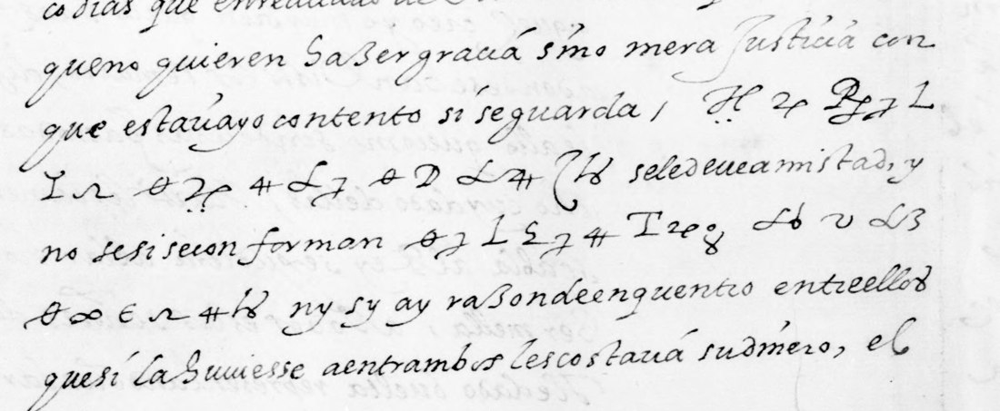

At a glanceCiphertext-only break · complete
- The letter
- Matheo de Segura to the Constable of Castile, Madrid, 8 August 1596: five pages on money, court business and marriage negotiations, with two brief cipher passages.
- Where
- BnF espagnol 336, no. 99, ff. 196r–198r (Gallica views 336–340, cipher on 337–338). Tomokiyo lists it as the remaining letter in the volume with no known decipherment.
- The cipher
- A homophonic substitution with 35 sign classes, two nulls and one sign for ll; 125 cipher tokens.
- How it was read
- A Spanish homophonic solver produced Spanish only after joined signs were split. The segmentation was then fixed from the images. No outside key or plaintext was used, so the decipherment has internal support only.
- What it says
- A councillor reports a meeting on the comet: dizen que el mundo se acabará o morirá el rey por setiembre. The shorter passage concerns Ponte or Aponte and Escudero.
- Still open
- All 125 tokens have proposed values; 119 (95.2%) remain once six tentative assignments are excluded. Devos’s 1950 key tables were not obtained for comparison.
01 The letter and its two cipher passages
The five written pages discuss money, services, court business, military news and marriage negotiations. The last page gives Madrid, 8 August 1596, and Matheo de Segura's signature. The cipher occupies only brief passages on f. 196v and f. 197r. The clear pages provide context; none supplies a decipherment of the encrypted words.
Direct Gallica access failed during this attempt. Full-resolution Wikimedia Commons mirrors supplied the images. The often-repeated locator “view 280” is not this letter: it shows folio 164. The correct image sequence is 336 = 196r, 337 = 196v, 338 = 197r, 339 = 197v and 340 = 198r.
02 Ponte, Escudero and a possible quarrel
Bold words were encrypted. Spaces, accents and punctuation are editorial; the surrounding clear Spanish is lightly normalized.
…que no quieren hazer gracia sino mera justicia, con que estaría yo contento si se guarda. A Ponte creo cierto se le deve amistad, y no sé si se conforman conforman él y Escudero, ni si ay razón de encuentro entre ellos, que si la huviesse a entrambos les costaría su dinero…

The decrypted letters run apon / tecreocierto / conformanelyes / cudero. “A Ponte” and “Aponte” are alternative segmentations; no first name is established. The clear se conforman followed by cipher conforman is awkward and is kept as written. In sense, Segura discusses friendship owed to Ponte/Aponte, whether he and Escudero agree, and the financial consequences of a quarrel. The clear text that follows says Segura does not want the Constable's money diminished by it and will return to Toledo to finish these matters.
03 “El mundo se acabará o morirá el rey”
Un consejero muy grave me ha dicho que han hecho aquí junta sobre la cometa que ha avido estos días, y dizen que el mundo se acabará o morirá el rey por setiembre. Él bien cerca dello paresce que anda. Creo en Dios.
“A very weighty councillor has told me that they have held a meeting here about the comet that has appeared these days, and they say the world will end or the king will die around September. He seems to be very close to it. I believe in God.”

The four decrypted lines are dizenqueelmundoseacabara / omoriraelreyporsetiem / breelbiencercadellopa / rescequeandacreoendios. The line break inside setiembre helps resolve an overwritten sign at the end of the second line. The final creo en Dios is kept; its punctuation and tone are interpretive. Segura is reporting a councillor's account. It does not establish an official council decision, and the comet has not been identified astronomically.
04 How the key was recovered
The first transcription had 114 tokens and wrongly treated several joined pairs as single signs. A Python homophonic solver failed; a guessed crib, pronostico, also failed and was discarded. A faster C# solver (simulated annealing) then tested three transcription variants, 250 restarts each, against the repository's Spanish Golden Age five-gram model. Only the variant that split the joined signs and temporarily merged dotted with undotted forms produced connected Spanish: dizen que el mundo, el rey, paresce que anda and Escudero.
The final segmentation was then fixed from the images, using the solver output only as a guide. Joined forms separate into qu, el and es; two signs attached to the clear introduction begin dizen. A final loop differs from the n-sign, and square and hooked c-like forms have different values. The final transcription keeps the dot distinctions and has 125 tokens in 35 sign classes. The key is a homophonic substitution with two nulls and one special sign for ll.
Published Descovar, Fuentes–Pimentel, Ibarra–Doria, Ibarra–Zúñiga and Cg.13 inventories were compared without finding a match. The full Devos 1950 tables were unavailable, so that comparison is still to be made. No external plaintext was used. The decoder and saved key reproduce the decipherment and generate the sign-by-sign display above.
05 What is still tentative
There are no unassigned tokens, but six singleton values are grade M, depending on context. All other token values are grade I, inferred. None is graded H or C because no original key or independent plaintext was obtained. The 95.2% figure counts the proposed values after excluding the M grades; it is not a probability of correctness.
| Modern sign label | Proposed value | Where and why tentative |
|---|---|---|
| Hd | null | A, run 1: underdotted sign before apon |
| rd | null | A, run 2: deletion gives creo |
| openC | t | A, run 2: singleton in cierto |
| Q | n | A, run 3: singleton in conforman |
| X | m | B, line 2: overwritten sign in setiem-bre |
| ud | ll | B, line 3: dotted singleton in dello |
Dotted signs are not all nulls: the values ad=r, Yd=i and the tentative ud=ll are kept. The reconstructed key covers only the signs that occur here. Further key material could confirm or revise the singletons, the segmentation of the proper name and the awkward wording of the shorter passage.
Full texts
The transcription and the decryption of every document on this page, so that the reading can be used and checked. Short files are shown here; all are in the repository.
BnF espagnol 336 no. 99 ff. 196r-198r, Madrid, 8 Aug 1596
Matheo de Segura to the Constable of Castile: after a grave councillor's report of a meeting about a recent comet, the cipher says 'dizen que el mundo se acabará o morirá el rey por setiembre. Él bien cerca dello paresce que anda. Creo en Dios'; a shorter passage names A Ponte and Escudero. Key rebuilt ciphertext-only from this letter; six singleton values are graded M.
Transcription
[que estava yo contento si se guarda] Hd r R z L Y n o rd a l z o D l a openC k [se le deve amistad y no se si se conforman] o z L E z a T r Q l b u l three o inf e n a k [ny sy ay rason de encuentro entre ellos] [Un consejero muy grave me ha dicho que han hecho aqui junta sobre la cometa que ha avido estos dias y] e D bar8 n L qshape d l l b T inf L e z three l r o s g H a s k T z a D hash r l b ad l u R z a three l Y D l X g a n l b g D l L o l hash c s e l ud z R r a l three o l qshape d l r L e r o a l k l L e Yd J three [Tambien disen que se tratan treguas entre su magestad y Bearne]
Transcription
Hd r R z L Y n o rd a l z o D l a openC k o z L E z a T r Q l b u l three o inf e n a k e D bar8 n L qshape d l l b T inf L e z three l r o s g H a s k T z a D hash r l b ad l u R z a three l Y D l X g a n l b g D l L o l hash c s e l ud z R r a l three o l qshape d l r L e r o a l k l L e Yd J three
Decryption
# Matheo de Segura to the Constable of Castile, Madrid, 8 August 1596 BnF espagnol 336 no. 99, ff. 196r–198r; Gallica views 336–340. Reading made 23 September 2026 from the images, without an external decipherment. ## Editorial conventions Bold text below was encrypted. Spaces, accents, capitalization and punctuation are editorial. Clear-text excerpts are lightly normalized, not a diplomatic edition of the five-page letter. `cipher_tokens.txt` preserves the eight cipher runs/lines in reading order; `token_reading.tsv` gives every sign, its proposed value and its grade. The labels are modern identifiers, not facsimiles of the signs. All 125 tokens have proposed values; 119 (95.2%) remain if the six context-dependent M readings are excluded. This measures the proposal, not independent proof of its correctness. ## A — f. 196v, view 337 …que no quieren hazer gracia sino mera justicia, con que estaría yo contento si se guarda. **A Ponte creo cierto** se le deve amistad, y no sé si se conforman **conforman él y Escudero**, ni si ay razón de encuentro entre ellos, que si la huviesse a entrambos les costaría su dinero; el de V.Ex. no querría que menguase por esta causa, y los demás cada uno le ayude su suerte, y así yo me bolveré a Toledo a dar mate a estas cosas, y avisaré de lo que huviere. Literal decrypted runs: ``` apon tecreocierto conformanelyes cudero ``` The first name may be segmented **A Ponte** or **Aponte**; the signs alone do not decide. No first name is established for this person or for Escudero. The apparent clear/cipher repetition *se conforman / conforman* is retained. Its awkwardness must not be hidden by silently replacing cipher text with a different name or verb. In sense, Segura discusses friendship owed to Ponte/Aponte, agreement between him and Escudero, and the financial consequences of a quarrel. ## B — f. 197r, view 338 Un consejero muy grave me ha dicho que han hecho aquí junta sobre la cometa que ha avido estos días, y **dizen que el mundo se acabará o morirá el rey por setiembre. Él bien cerca dello paresce que anda. Creo en Dios.** Literal decrypted lines (the first begins with the two cipher signs at the end of the introductory line): ``` dizenqueelmundoseacabara omoriraelreyporsetiem breelbiencercadellopa rescequeandacreoendios ``` English: “A very weighty councillor has told me that they have held a meeting here about the comet that has appeared these days, and they say the world will end or the king will die around September. He seems to be very close to it. I believe in God.” This reports what a councillor told Segura. It does not establish an official council decision or the astronomical identity of the comet. The punctuation and tone of the final pious formula remain editorial. ## Other pages 196r: money, expenses, debts and payments involving the Council of Italy; concern for services and reputation. 196v: royal help and consultation with Don Alonso Idiáquez, followed by passage A. 197r: passage B, truce and military news, Carmona, the adelantado and Cebiaur, ships and men, Lisbon/Portalegre, and the sale of Don Blasco's estate. 197v–198r: marriage negotiations involving García de Alvarado, the Duke of Alba's sister, Jerónimo de Salamanca, Gaspar Bullón and Haro; dowry and vocation; the Cortes' grant of thirty million over six years. The last page supplies Madrid, 8 August 1596, and Matheo de Segura's signature, with a postscript about infantry for the expedition. These are contextual summaries, not additional recovered ciphertext. ## Doubtful assignments | Token | Proposed value | Occurrence | Grade and reason | |---|---|---|---| | Hd | null | A, run 1 | M: underdotted sign, deletion inferred from the name/context | | rd | null | A, run 2 | M: underdotted sign, deletion inferred from *creo* | | openC | t | A, run 2 | M: singleton in *cierto* | | Q | n | A, run 3 | M: singleton in *conforman* | | X | m | B, line 2 | M: overwritten end-of-line sign in *setiem-bre* | | ud | ll | B, line 3 | M: dotted singleton in *dello* | The other 119 token readings are I, inferred from the substitution and Spanish context. None is graded H or C: no contemporary key or independent plaintext was obtained. Dotted signs are not indiscriminately erased: `ad=r`, `Yd=i` and `ud=ll` are kept. The reconstructed key covers the signs used here, not the complete historical cipher alphabet.
Decryption
line position token plaintext grade 1 1 Hd [null] M 1 2 r a I 1 3 R p I 1 4 z o I 1 5 L n I 2 1 Y t I 2 2 n e I 2 3 o c I 2 4 rd [null] M 2 5 a r I 2 6 l e I 2 7 z o I 2 8 o c I 2 9 D i I 2 10 l e I 2 11 a r I 2 12 openC t M 2 13 k o I 3 1 o c I 3 2 z o I 3 3 L n I 3 4 E f I 3 5 z o I 3 6 a r I 3 7 T m I 3 8 r a I 3 9 Q n M 3 10 l e I 3 11 b l I 3 12 u y I 3 13 l e I 3 14 three s I 4 1 o c I 4 2 inf u I 4 3 e d I 4 4 n e I 4 5 a r I 4 6 k o I 5 1 e d I 5 2 D i I 5 3 bar8 z I 5 4 n e I 5 5 L n I 5 6 qshape q I 5 7 d u I 5 8 l e I 5 9 l e I 5 10 b l I 5 11 T m I 5 12 inf u I 5 13 L n I 5 14 e d I 5 15 z o I 5 16 three s I 5 17 l e I 5 18 r a I 5 19 o c I 5 20 s a I 5 21 g b I 5 22 H a I 5 23 a r I 5 24 s a I 6 1 k o I 6 2 T m I 6 3 z o I 6 4 a r I 6 5 D i I 6 6 hash r I 6 7 r a I 6 8 l e I 6 9 b l I 6 10 ad r I 6 11 l e I 6 12 u y I 6 13 R p I 6 14 z o I 6 15 a r I 6 16 three s I 6 17 l e I 6 18 Y t I 6 19 D i I 6 20 l e I 6 21 X m M 7 1 g b I 7 2 a r I 7 3 n e I 7 4 l e I 7 5 b l I 7 6 g b I 7 7 D i I 7 8 l e I 7 9 L n I 7 10 o c I 7 11 l e I 7 12 hash r I 7 13 c c I 7 14 s a I 7 15 e d I 7 16 l e I 7 17 ud ll M 7 18 z o I 7 19 R p I 7 20 r a I 8 1 a r I 8 2 l e I 8 3 three s I 8 4 o c I 8 5 l e I 8 6 qshape q I 8 7 d u I 8 8 l e I 8 9 r a I 8 10 L n I 8 11 e d I 8 12 r a I 8 13 o c I 8 14 a r I 8 15 l e I 8 16 k o I 8 17 l e I 8 18 L n I 8 19 e d I 8 20 Yd i I 8 21 J o I 8 22 three s I
Translation
<!-- English translation of the two passages A and B of reading.md (Claude Opus 5.5, 23 Oct 2026): the cipher (in **bold**) with the clear sentences around it, as reading.md gives them; the rest of the five-page letter is only summarised there and is not translated. An excerpt. --> # Matheo de Segura to the Constable of Castile, Madrid, 8 August 1596 (BnF espagnol 336 no. 99): English translation of the cipher passages ## A — f. 196v … for they will not grant a favour but only strict justice, with which I would be content if it is kept. **To Ponte, I truly believe,** friendship is owed, and I do not know whether they agree, **whether he and Escudero agree**, nor whether there is any cause of clash between them, for if there were, it would cost both of them their money; I would not want Your Excellency's to diminish for this reason, and as for the others, let each one's luck help him; and so I shall go back to Toledo to finish off these matters, and I shall report what there is. ## B — f. 197r A very weighty councillor has told me that they have held a meeting here about the comet that has appeared these days, and **they say that the world will end or the king will die around September. He seems to be very near it. I believe in God.**
Key: key.json
06 Sources and files
- BnF, espagnol 336, no. 99, ff. 196r–198r, views 336–340; cipher on 337–338.
- Wikimedia Commons, view 337 and view 338, mirrors of the BnF scans.
- Satoshi Tomokiyo, George Lasry's solutions, Spanish ciphers and unsolved ciphers list, consulted 23 September 2026. These list the Segura item as undeciphered (no decipherment known); other letters in this volume have earlier solutions.
- J. P. Devos, Les chiffres de Philippe II (1555–1598) (1950): suggested comparator, full tables not obtained.
- Reading and apparatus; reconstructed key; all token grades; reproducible decoder.
.jpg){kind=link}
.jpg){kind=link}
Transcriptions, failed searches, solver logs, measured coverage and limitations are preserved in the repository folder.
Cite this page
Daniel Bourdeau, “Matheo de Segura to the Constable of Castile, 8 August 1596”, Cyphersolver, posted 23 September 2026, updated 26 October 2026, https://cyphersolver.com/segura1596.html.